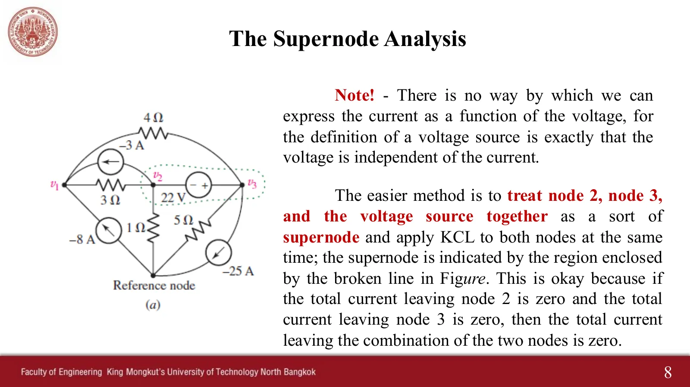
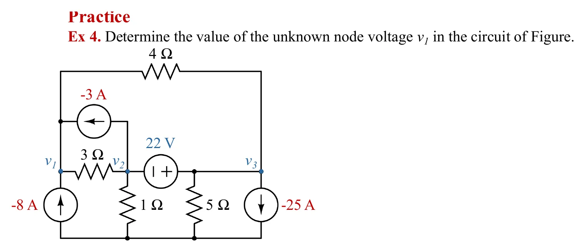
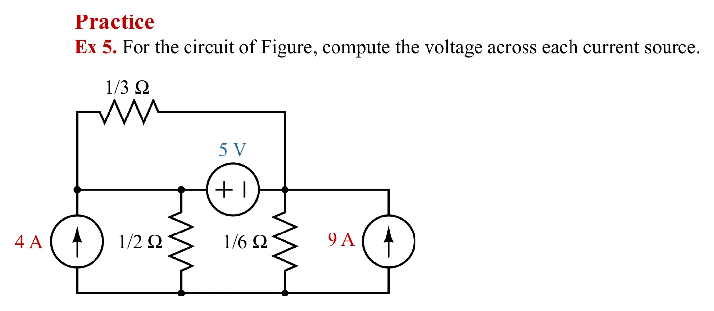
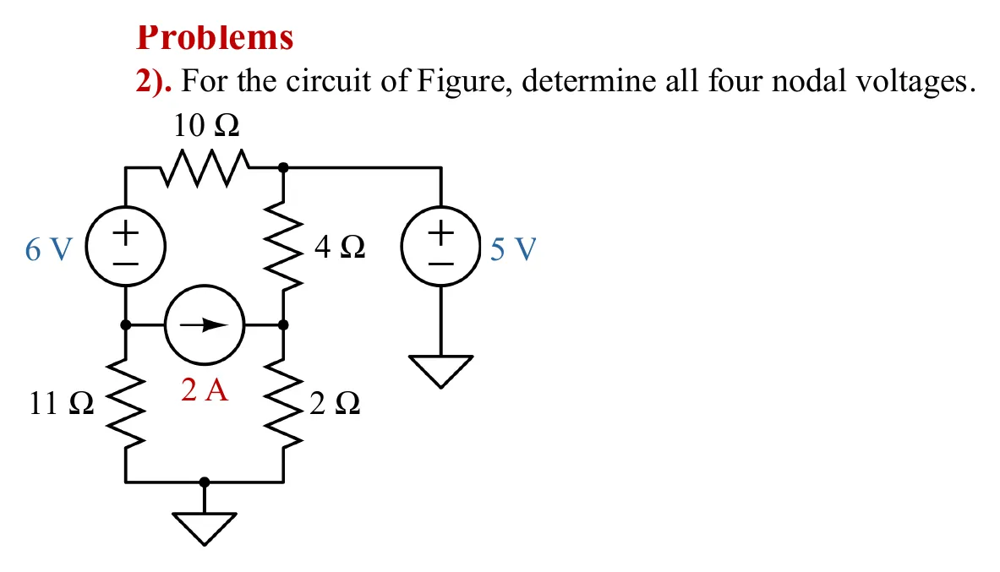
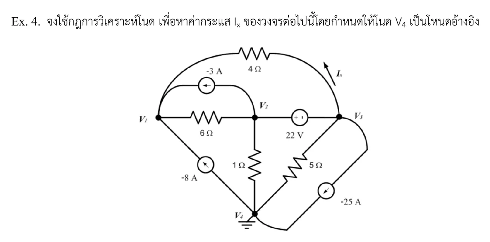

สไลด์หน้า 8: แหล่งจ่ายแรงดันไม่บอกกระแสของตัวเอง จึงเขียนกระแสที่ผ่านมันด้วยแรงดันโนดไม่ได้ ถ้าแหล่งจ่ายแรงดันอยู่ระหว่างสองโนดที่ยังไม่รู้ค่า ให้ล้อมสองโนดนั้นพร้อมแหล่งจ่ายเป็นซูเปอร์โนด (supernode) แล้วเขียนกฎกระแสของเคียร์ชอฟฟ์ (KCL) ของกระแสที่ข้ามเส้นประเพียงสมการเดียว และเพิ่มสมการเงื่อนไข \(v_+ - v_- = V_s\) จากแหล่งจ่าย ในภาพจำลอง เส้นประสีเหลืองคือขอบของซูเปอร์โนด ลูกศรสีเหลืองคือกระแสที่ข้ามเส้นประออกไป และในขั้นของซูเปอร์โนดมีกล่อง "วิธีในเฉลยของอาจารย์" ที่เขียน KCL ทีละโนดโดยมีกระแสของแหล่งจ่ายแล้วนำมารวมกัน แบบที่ผู้สอนทำใน Ex 4 หน้านี้มี 4 โจทย์ เรียงทีละข้อ (Ex 4, Ex 5, การบ้านข้อ 2 และแบบฝึกหัด Ex.4) ตามด้วยแบบฝึกนับจำนวนสมการ
Slide p. 8: a voltage source does not tell its own current, so its current cannot be written with node voltages. When a voltage source sits between two unknown nodes, fence both nodes and the source as a supernode, write Kirchhoff's Current Law (KCL) once for the currents crossing the dashed line, and add the constraint \(v_+ - v_- = V_s\) from the source. In the simulations the yellow dashed line is the edge of the supernode, the yellow arrows are the currents leaving across it, and the supernode step has a box "the route in the instructor's solutions" that writes KCL at each node with the source current and then adds them, as the teacher did in Ex 4. This page has 4 problems, one after another (Ex 4, Ex 5, homework 2 and exercise Ex.4), then a drill on counting equations.
ขั้นตอนเหมือนวิธีโนดในหน้า 4.1 เพิ่มขั้นที่ 3: หาแหล่งจ่ายแรงดันที่ไม่ได้ต่อกับโนดอ้างอิง แล้วเขียนสมการเงื่อนไขของแต่ละตัว ในห้องผู้สอนสรุปไว้ที่หน้าสารบัญว่า ใช้ซูเปอร์โนดเมื่อวงจรมีแหล่งจ่ายแรงดันอิสระอยู่ระหว่างสองโนด และใช้ซูเปอร์เมช (หน้า 4.4) เมื่อมีแหล่งจ่ายกระแสอิสระอยู่ระหว่างสองเมช
The steps are those of nodal analysis on page 4.1 with one more, step 3: find every voltage source that is not connected to the reference and write its constraint. In class the teacher summed it up on the contents slide: use a supernode when the circuit has an independent voltage source between two nodes, and a supermesh (page 4.4) when it has an independent current source between two meshes.




ก่อนลงมือเขียน ให้นับก่อนเสมอ: โนดที่ไม่ใช่โนดอ้างอิงมี N − 1 ตัว และแหล่งจ่ายแรงดันแต่ละตัวลดสมการ KCL ลงหนึ่ง ไม่ว่าจะต่อกับโนดอ้างอิง (รู้ค่าโนดทันที) หรืออยู่ระหว่างสองโนด (ซูเปอร์โนด + สมการเงื่อนไข) เติมตัวเลขสี่ช่องของแต่ละวงจรแล้วกดตรวจ (ตัวต้านทานที่อนุกรมกันให้รวมก่อน โนดตรงกลางจึงไม่นับ)
Before writing anything, count: there are N − 1 non-reference nodes, and each voltage source removes one KCL equation, whether it goes to the reference (the node is known at once) or sits between two nodes (a supernode plus a constraint). Fill in the four numbers for each circuit and press Check (resistors in series are combined first, so the node between them is not counted).